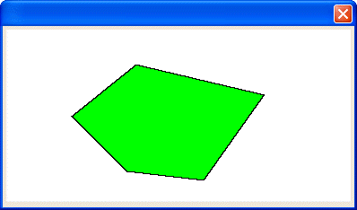

UI_SHAPE_LINETO()
Syntax
UI_SHAPE_LINETO( Shape_Name as C, Xpos as N, Ypos as N )
Argument | Description |
Shape_Name | The name of the shape to draw. |
Xpos | The horizontal coordinate of the line end point. Larger values move right. |
Ypos | The vertical coordinate of the line end point. Larger values move down. |
Description
The UI_SHAPE_LINETO() function draws a line from the current position to the specified end point.

Limitations
This function is only used in the Code sections of UI_BITMAP_DRAW(), UI_SCREEN_DRAW(), and UI_PRINTER_DRAW().
Example
ui_bitmap_create("test", 4, 2) ui_bitmap_draw("test", <<%code% set_origin(0,0) inner_rect(0, 0, 4, 2) set_pen("black") set_brush("green") ui_shape_start_poly("five", 1.5, .4) ui_shape_lineto("five", 3, .75) ui_shape_lineto("five", 2.3, 1.75) ui_shape_lineto("five", 1.4, 1.65) ui_shape_lineto("five", .75, 1) ui_shape_poly("five", 1.5, .4) fill_shape("five", 0,0) %code%) ui_dlg_box("", "{image=test}") |
See Also